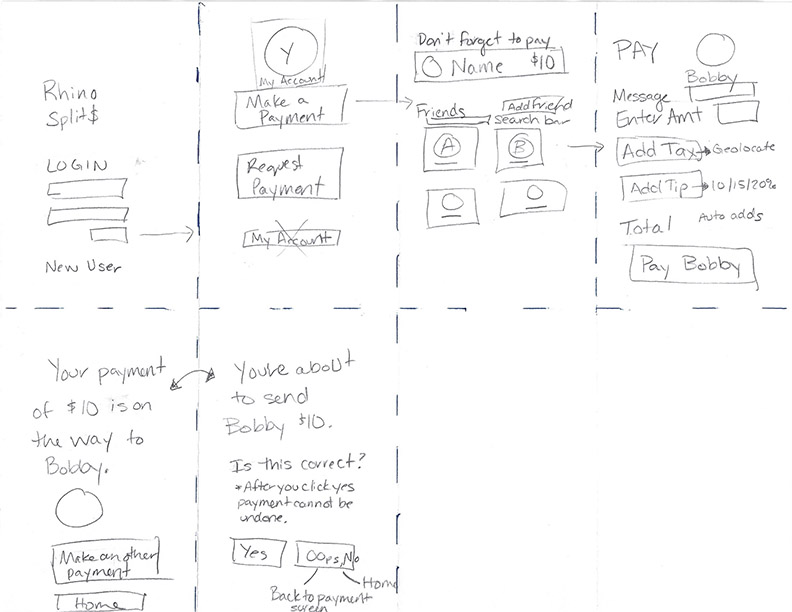
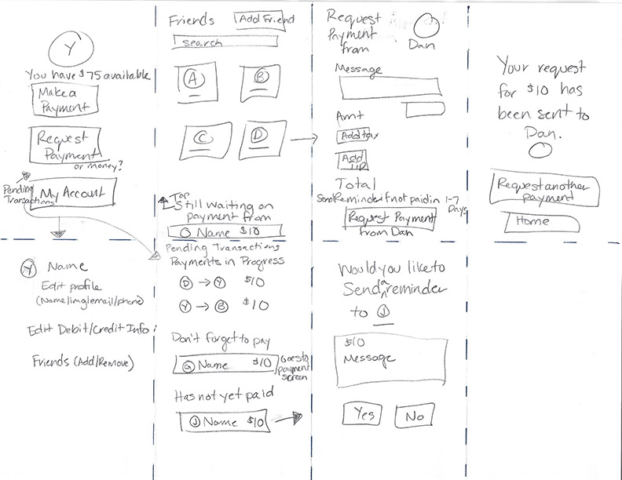

RhinoSplits is a fictitious peer to peer money transfer app. Real users were interviewed.
The slides below walk you through my research process and the insights I gained, including
I learned a lot in this exercise. I had experience wireframing static websites, but a mobile app was a whole different ball game. I started out with simple sketches of the steps a user would take to pay a friend.
I then explored requesting a payment and what "My Account" could look like.
Pretty good right? I thought so...until I started building it in Sketch. I quickly discovered key functionalities that I didn't think of while drawing, like how does a user go back to the previous screen or having duplicated features, like seeing who still owes you money. With each iteration, I discovered something that was missing or could be improved.
All of these changes drove home the importance of prototyping. If this app would have been put into production before prototyping and user testing, the developers would have spent a lot of time rebuilding as each "new" feature was discovered and added to the project.
From Sketch, I turned my design into a working prototype with Marvel. Take it for a test drive below.
With a beautiful prototype, it was time to see if someone other than me could use it...that someone was our user. I sat with a couple individuals who match the RhinoSplits persona and asked them to complete a couple tasks.
One key discovery from the original hi-fidelity prototype was the user couldn't see who owed them money. In taking my idea from lo-fidelity to hi-fidelity, I had lost that feature. (You may have noticed it in the current prototype.)
I retested the current prototype with another user who navigated that application with ease.
If this app was going to be created, there are several key functionalities that still need to be designed and tested. Like, what's the process for inviting friends? Or, how does the user add their banking information?
This case study enabled me to apply my user experience and interaction design learnings to a real-world simulated project. I learned just how important these processes are to creating a viable digital product.
I'm excited to apply the user experience process to my digital marketing.